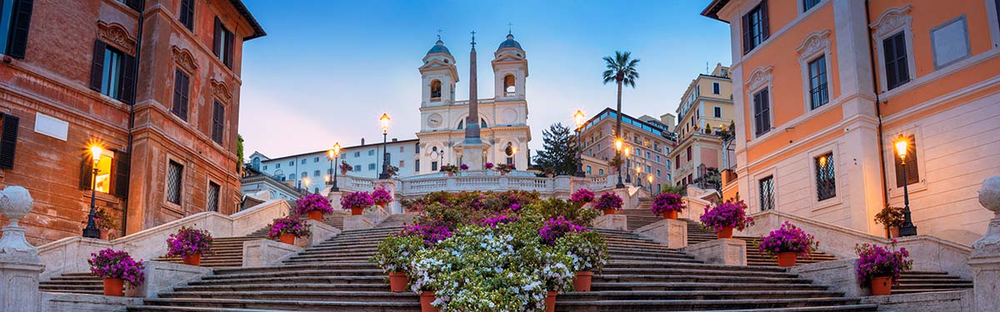

Discover eternal city
Discover eternal city
The famous steps on the Piazza di Spagna

The ‘Spanish steps’ in Rome, built in Rococo style between 1723 and 1726, are the steps that lead from the Piazza di Spagna square to the French monastery church Trinita dei Monti (built between 1502–1587). There are 135 steps and three different terraces, referring to the Holy Trinity (the Trinità). The top of the stairs near the Egyptian obelisk offers a beautiful view, albeit one shared with throngs of other tourists. The name can be a bit confusing, as construction of the steps was actually commissioned by the French (Louis XII). In the 17th century, the Spanish embassy was located on the square – ‘Piazza di Spagna’ – at the base of the stairs, hence the name ‘Spanish Steps’. The official name is therefore not Spanish steps, but Scalinata della Trinità dei Monti.
.jpg)
On this Piazza di Spagna, you can also find a fountain by Pietro Bernini (father of the famous Gian Lorenzo Bernini), called ‘Fontana della Barcaccia’. This literally means ‘Fountain of the ugly boat’. This does not refer to the sculpture being ugly, but to the story that the river Tiber flooded in 1598 and stranded the ugly little boat on this spot. That was Bernini's inspiration. The not very impressive water jets of the fountain are the result of insufficient water pressure from the aqueduct that supplies it. If the French had had their way, there would have also been a large statue of the French king Louis XII near the steps. But the pope at the time would not allow that, leading to construction being delayed. Nowadays, the area surrounding Piazza di Spagna is a luxurious shopping area, with the street Via Condotti being the highlight. Late April, when Rome celebrates its anniversary, the Spanish Steps are transformed into a sea of azalea flowers. The statue of Mary at the base of the Spanish Steps is also covered in flowers in spring and on 8 December (Mary's Immaculate Conception). It is tradition for the pope to visit the Spanish Steps on this day. You can visit the Trinita dei Monti at the top of the steps for free. It contains a number of impressive murals, such as the deposition from the cross by Volterra.